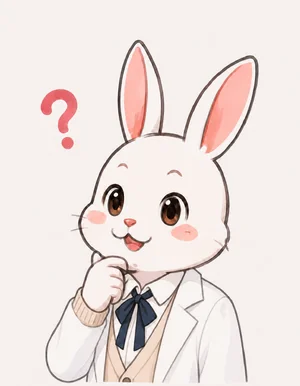

STAGE 9
UML クラス図
設計を図で伝える
🎯 ミッション
UML クラス図の箱の書き方と、5種類の線（継承・実装・関連・集約・コンポジション）を区別できるようになろう。5つの関係に正しい線を選び、確認クイズに全問正解すれば合格。
未達成
ねこ博士
クラスが10個、100個と増えると、コードを全部読まなくても設計の全体が分かる図が欲しくなる。そのための世界共通の書き方が UML（統一モデリング言語）で、クラスの関係を描いたものをクラス図と呼ぶ。
ねこ博士
クラスは、3段に区切った箱で描く。上の段にクラス名、真ん中にフィールド、下の段にメソッド。名前の前の記号は、アクセス修飾子を表す。
┌──────────────────┐ │ Animal │ ← クラス名（抽象クラスは斜体） ├──────────────────┤ │ - weight: double │ ← フィールド（名前: 型） │ # name: String │ ├──────────────────┤ │ + speak(): String│ ← メソッド（名前(): 返す型） └──────────────────┘＋ public ／ − private ／ ＃ protected ／ 〜 何も付けない（同じパッケージ）
うさ美
STAGE7 で決めたアクセス修飾子が、そのまま記号になるんですね。weight は private だから −。
ねこ博士
そう。次はクラスどうしをつなぐ線だ。線の形で関係の種類を表す。
継承：白い三角の矢印、実線。子 → 親（Dog → Animal）。「〜の一種」
実装：白い三角の矢印、点線。クラス → インターフェース（Duck → Swimmer）。「〜ができる」
関連：ただの実線（向きを示すなら開いた矢印）。片方がもう片方を知っている・使う（飼育係 → 担当の動物）
集約：全体の側に白いひし形。全体が部分を集めているが、部分は全体と別に生きられる（動物園 ◇— 動物）
コンポジション：全体の側に黒いひし形。部分は全体の一部で、全体と一緒に作られ一緒に消える（動物 ◆— 健康記録）
うさ美
集約とコンポジションの違いが難しいです。どちらも「全体が部分を持っている」ですよね。
ねこ博士
見分けるコツは、「全体が無くなったとき、部分はどうなるか」だ。動物園が閉園しても、動物は別の動物園へ移って生きていける。これは集約。動物の健康記録は、その動物のためだけのもので、動物がいなくなれば記録の持ち主もいなくなる。これはコンポジション。

うさ美
じゃあ、本と、本のページは？ 本が無くなったらページは……本の一部だから、一緒に無くなる。コンポジションです。図書館と本なら、図書館が無くなっても本は残るから、集約。
ねこ博士
そう。ここで1つ注意しておこう。「コンポジションなら、全体を消すときに部分も消さないといけない」と言われることがあるけれど、それは C++ のように、メモリを自分で返す言語での話だ。Java は GC（『メモリのしくみクエスト』STAGE7）で、だれからもたどれなくなったものを自動で片付けるので、部分を消し忘れて残る、ということは起きない。Java のクラス図では、集約とコンポジションの違いは「部分が全体の外でも使われるか」という設計の意図を表すもの、と考えるといい。
ねこ博士
線の両端には、多重度（いくつつながるか）を書くことがある。
1 はちょうど1つ、0..1 は0か1つ、*（または 0..*）は0個以上、1..* は1個以上。うさ美
動物園と動物なら、動物園の側に 1、動物の側に *。1つの動物園に、動物が0匹以上いる。……でも、動物がいる時点で、どこか1つの動物園に属している、ということですよね。移るときは、前の動物園から外れて、新しいほうに入る。
ねこ博士
そう。多重度は「ある時点で」の数を書く。移ることがあっても、ある時点で属している動物園は1つ。図にすることで、「同時に2つの動物園に属せるのか？」という、言葉だけでは見落としやすい疑問にも気づけるんだ。
確認クイズ
Q1. クラス図で、フィールド名の前の「−」は何を表す？
正解！ ＋ public、− private、＃ protected、〜 何も付けない（同じパッケージ）。
Q2. 「Dog は Animal の一種」を表す線は？
正解！ 継承は実線＋白い三角。点線＋白い三角はインターフェースの実装。
Q3. 集約とコンポジションの違いの見分け方は？
正解！ 動物園と動物は集約、動物と健康記録はコンポジション。Java では、消し方ではなく設計の意図を表す。